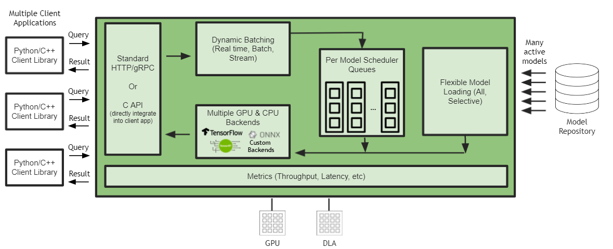

Triton Inference Server Support for Jetson and JetPack
Contents
Triton Inference Server Support for Jetson and JetPack#
A release of Triton for JetPack 5.0 is provided in the attached tar file in the release notes.

Triton Inference Server support on JetPack includes:
Running models on GPU and NVDLA
Limitations on JetPack 5.0:
Onnx Runtime backend does not support the OpenVino and TensorRT execution providers. The CUDA execution provider is in Beta.
The Python backend does not support GPU Tensors and Async BLS.
CUDA IPC (shared memory) is not supported. System shared memory however is supported.
GPU metrics, GCS storage, S3 storage and Azure storage are not supported.
On JetPack, although HTTP/REST and GRPC inference protocols are supported, for edge use cases, direct C API integration is recommended.
You can download the .tgz file for Jetson from the Triton Inference Server
release page in the
“Jetson JetPack Support” section.
The .tgz file contains the Triton server executable and shared libraries,
as well as the C++ and Python client libraries and examples.
Installation and Usage#
Build Dependencies for Triton#
The following dependencies must be installed before building Triton server:
apt-get update && \
apt-get install -y --no-install-recommends \
software-properties-common \
autoconf \
automake \
build-essential \
git \
libb64-dev \
libre2-dev \
libssl-dev \
libtool \
libboost-dev \
rapidjson-dev \
patchelf \
pkg-config \
libopenblas-dev \
libarchive-dev \
zlib1g-dev \
python3 \
python3-dev \
python3-pip
Additional Onnx Runtime dependencies must be installed to build the Onnx Runtime backend:
pip3 install --upgrade flake8 flatbuffers
Additional PyTorch dependencies must be installed to build (and run) the PyTorch backend:
apt-get -y install autoconf \
bc \
g++-8 \
gcc-8 \
clang-8 \
lld-8
pip3 install --upgrade expecttest xmlrunner hypothesis aiohttp pyyaml scipy ninja typing_extensions protobuf
Apart from these PyTorch dependencies, the PyTorch wheel corresponding to the release must also be installed (for build and runtime):
pip3 install --upgrade https://developer.download.nvidia.com/compute/redist/jp/v50/pytorch/torch-1.12.0a0+2c916ef.nv22.3-cp38-cp38-linux_aarch64.whl
The following dependencies must be installed before building Triton client libraries/examples:
apt-get install -y --no-install-recommends \
curl \
jq
pip3 install --upgrade wheel setuptools cython && \
pip3 install --upgrade grpcio-tools numpy attrdict pillow
Note: OpenCV 4.2.0 is installed as a part of JetPack. It is one of the dependencies for the client build.
Note: When building Triton on Jetson, you will require a recent version of cmake. We recommend using cmake 3.21.1. Below is a script to upgrade your cmake version to 3.21.1.
apt remove cmake
wget -O - https://apt.kitware.com/keys/kitware-archive-latest.asc 2>/dev/null | \
gpg --dearmor - | \
tee /etc/apt/trusted.gpg.d/kitware.gpg >/dev/null && \
apt-add-repository 'deb https://apt.kitware.com/ubuntu/ focal main' && \
apt-get update && \
apt-get install -y --no-install-recommends \
cmake-data=3.21.1-0kitware1ubuntu20.04.1 cmake=3.21.1-0kitware1ubuntu20.04.1
Runtime Dependencies for Triton#
The following runtime dependencies must be installed before running Triton server:
apt-get update && \
apt-get install -y --no-install-recommends \
libb64-0d \
libre2-5 \
libssl1.1 \
rapidjson-dev \
libopenblas-dev \
libarchive-dev \
zlib1g \
python3 \
python3-dev \
python3-pip
The following runtime dependencies must be installed before running Triton client:
apt-get update && \
apt-get install -y --no-install-recommends \
curl \
jq
pip3 install --upgrade wheel setuptools && \
pip3 install --upgrade grpcio-tools numpy attrdict pillow
The PyTorch runtime depenencies are the same as the build dependencies listed above.
Usage#
Note: The PyTorch backend depends on libomp.so, which is not loaded automatically. If using the PyTorch backend in Triton, you need to set the LD_LIBRARY_PATH to allow libomp.so to be loaded as needed before launching Triton.
LD_LIBRARY_PATH="$LD_LIBRARY_PATH:/usr/lib/llvm-8/lib"
Note: On Jetson, the backend directory must be explicitly specified using the
--backend-directory flag. Triton defaults to using TensorFlow 2.x and a version string
is required to use TensorFlow 1.x.
tritonserver --model-repository=/path/to/model_repo --backend-directory=/path/to/tritonserver/backends \
--backend-config=tensorflow,version=2
Note: perf_analyzer is supported on Jetson, while the model_analyzer
is currently not available for Jetson. To execute perf_analyzer for C API, use
the CLI flag --service-kind=triton_c_api:
perf_analyzer -m graphdef_int32_int32_int32 --service-kind=triton_c_api \
--triton-server-directory=/opt/tritonserver \
--model-repository=/workspace/qa/L0_perf_analyzer_capi/models
Refer to these examples that demonstrate how to use Triton Inference Server on Jetson.